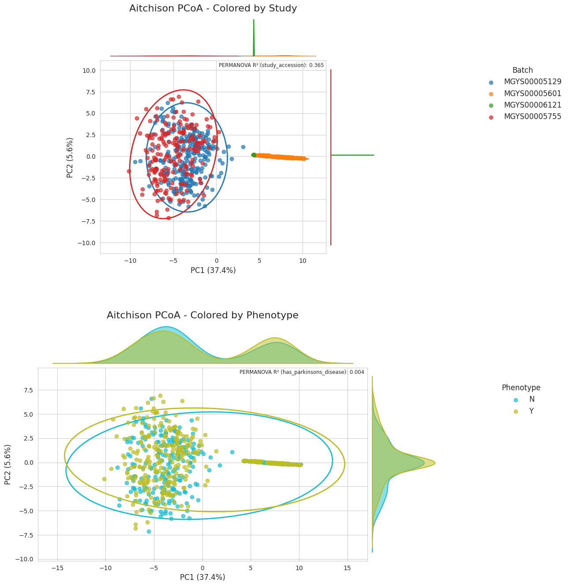
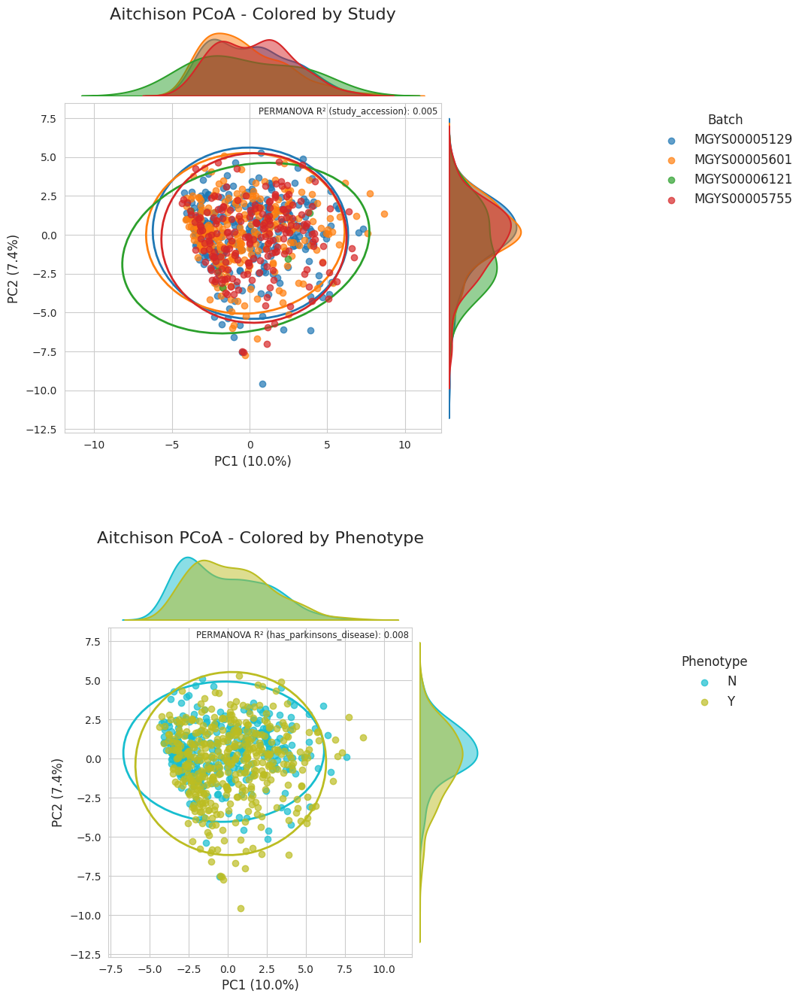
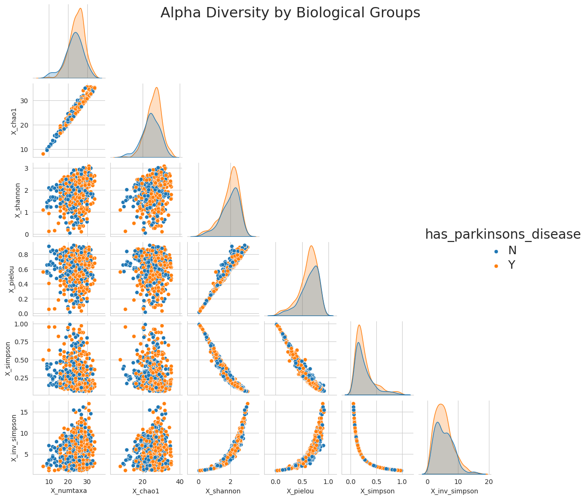
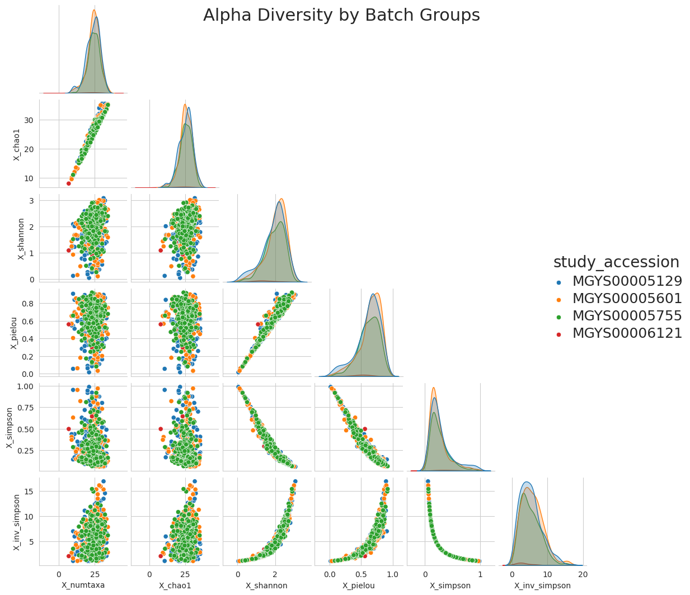

Combining Parkinson’s disease taxonomic analyses#
In this notebook we aim to imitate the analyses in “ABaCo demo: Parkinson’s disease gut microbiome” where the aim was to “integrate the 9 studies while preserving key distinctions from the two patient states (Parkinson’s v.s. Healthy).”
# uncomment if colab
# !pip install mgnipy
Curating the taxonomic datasets with metadata#
Searching for studies using MGnifier#
To start we configure our MGnipy client and access the MGnify API Studies resource.
We will filter our query to studies of the gut microbiome that mention “parkinson”s disease.
We can preview the resulting query urls via .explain()
from mgnipy import MGnipy
# Initialize MGnipy with a cache directory
MG = MGnipy(cache_dir="downloads")
# Search for studies related to Parkinson's disease in the human gut microbiome
pd_studies = MG.studies(
search="parkinson",
biome_lineage="root:Host-associated:Human:Digestive system:Large intestine:Fecal",
)
# Show all of the request urls for the search i.e., the query set
pd_studies.explain()
https://www.ebi.ac.uk/metagenomics/api/v2/studies?biome_lineage=root%3AHost-associated%3AHuman%3ADigestive+system%3ALarge+intestine%3AFecal&search=parkinson&page=1
looks good. we can proceed with actually executing the list query/queries via .get(). To enrich our list of studies with metadata details we can do this in bulk using .enrich_details() or asynchronously via .aenrich_details()
# as http client manager
async with MG:
# populate study list
await pd_studies.aget()
# enrich study list with metadta
await pd_studies.aenrich_details()
# can view as pandas or even save to file if you prefer
study_meta = pd_studies.metadata
# taking a look
study_meta.to_pandas(expand_nested_dicts=True)
Now that we found some studies that match our sesarch criteria, we can take a look at their datasets.
Using MGazine to access the study datasets#
we can access the mgazine of datasets (kinda like a list of available datasets) via .datasets attribute. The study details we retrieved above will also be passed on to the mgazine
# access mgazine
MZ = pd_studies.datasets
# take a look
print(MZ)
Notice in “Nonempty metadata sets” we can see that the study details we collected above are preserved in the mgazine.
The mgnify_studies attribute is a MGnifyMetadata object so contains all the same methods for viewing e.g.:
MZ_SSU.mgnify_studies.to_pandas(expand_nested_dicts=True)... .to_list()... .to_polars()... .records()etc.
Later on in Using MGnetizer to colllect more metadata we will assign additional sets of metadata to .mgnify_runs and .biosamples_metadata which will also convert the lists of records into a MGnifyMetadata object
Filtering the dataset list#
We can filter by the pipeline version and short descriptions of the datasets.
For the ABaCo demo we will use the taxonomic analyses and we will use v4 onwards due to differences in pipeline versions and specifically SILVA databases that were used for the taxonomic analysis
# we can filter by passing as index
V5 = MZ["v5"]["Taxonomic assignments SSU"]
V6 = MZ["Summary of SILVA-SSU taxonomies"]
print(V5, V6)
Combining dataset lists#
# can add magazines
MZ_SSU = V5 + V6
# print still works
print(MZ_SSU)
Now that we have filtered our list of datasets a bit, let’s actually get and merge the taxonomic datasets.
(Lazy)loading into one taxonomic dataset#
Currently availble in mgnipy are special MGazines for handling taxonomic assignment datasets in the classic taxa x sample/run format TaxaMGazine or in Darwin core-ready format DWCTaxaMGazine
we can also access these from an existing MGazine instance via .taxonomic or .taxonomic_dwc_ready
taxo = MZ_SSU.taxonomic
TaxaMGazine containing:
- MGnify pipeline versions: ['v5', 'v6']
- Number of downloads: 7
- Short descriptions: ['Summary of SILVA-SSU taxonomies', 'Taxonomic assignments SSU']
- Nonempty metadata sets: .mgnify_studies
-----------------------
Next steps: Use `.load()` to initialize.
now we can load the datasets as polars.LazyFrame
# lazyload the mgnify taxanomic assignments datasets
taxo.load()
# calling to_pandas or to_polars will collect the data and return a dataframe
taxo.to_pandas().head()
additionally there is a method .taxonomic_metadata() that parses “taxonomy” into the taxonomic ranks, returning as pandas or polars dataframe which is configured via arg df_engine=. The default is pandas.
also any run and sample metadata relevant to the observations (i.e., by run accessions) can be merged and viewed using .obs_metadata() again as polars or pandas dataframes. As we know metadata() for the observations in the taxonomic mgazine is not available:
# see first 5 sample's metadata
display(taxo.obs_metadata().head())
# recall the "Nonempty metadata set:"
print(taxo)
| _mgnipy_runs_accs |
|---|
| ERR2730148 |
| ERR2730149 |
| ERR2730150 |
| ERR2730151 |
| ERR2730152 |
TaxaMGazine containing:
- MGnify pipeline versions: ['v5', 'v6']
- Number of downloads: 7
- Short descriptions: ['Summary of SILVA-SSU taxonomies', 'Taxonomic assignments SSU']
- Nonempty metadata sets: .mgnify_studies
if we recall from earlier and again in the print statement, we only had .mgnify_studies enriched.
We still need to enrich with run and/or sample metadata, which we will do next :)
Using MGnetizer to collect more metadata#
MGnetizer is designed to retrieve the rich metadata from MGnify for a given list of MGnify accessions/ids.
First we get the ids to pass on
# separate run and assembly ids
runs_ids = [
x for x in taxo.runs_accessions if x.startswith("ERR") or x.startswith("SRR")
]
assembly_ids = [x for x in taxo.runs_accessions if x.startswith("ERZ")]
print(f"Runs: {len(runs_ids)}")
print(f"Assembly: {len(assembly_ids)}")
Runs: 876
Assembly: 952
Now we will instantiate the MGnetizers and pass the accessions/ids.
# initialize mgnetizer for runs and assemblies
mnet_run = MG.mgnetizer(resource="run", all_ids=runs_ids)
mnet_acc = MG.mgnetizer(resource="assembly", all_ids=assembly_ids)
print(mnet_run, mnet_acc)
MGnetizer for resource 'run' with 876 ids.
Progress: 0 ids.
Detail proxy: RunDetail
Cache directory: downloads/4318aa6ab908c5817a9ab02f4a926f726ee98863655922ca623e03b6b19e4403
MGnetizer for resource 'assembly' with 952 ids.
Progress: 0 ids.
Detail proxy: AssemblyDetail
Cache directory: downloads/cb192e1c57deabd60d7bb6e86d273fcff987cfb161e8b3ad833051dfe526a75e
# now making the API calls with context manager
async with MG:
await mnet_run.aenrich(limit=None)
await mnet_acc.aenrich(limit=None)
# we can combine the metadata from both runs and assemblies into one MGnifyMetadata
run_metadata = mnet_run.metadata + mnet_acc.metadata
# like any other MGnifyMetdata obj we can view as list, pd, pl
run_metadata.to_pandas().head()
if wanting to do some cleaning, do so and then save back to .data
below I clean as a pandas dataframe and then convert back to list of dicts for the MGazine
df_run = run_metadata.to_pandas()
df_run["study_accession"] = df_run["study_accession"].fillna(
df_run["assembly_study_accession"]
)
df_run = df_run.drop(columns=["assembly_study_accession"])
Optionally we can pass this metadata back to a MGazine to help with dataset curation:
# now back to TaxaMGazine instance as list of records
taxo.mgnify_runs = df_run.to_dict(orient="records")
# and now
print(taxo)
# also the metadata is updated
taxo.obs_metadata().info()
However, the available run/sample metadata is not consistent for all e.g. sample__sample_title which has lots missing. We can try to get additional sample metadata from the BioSamples database.
Collecting even more sample metadata using BioSampler#
BioSampler is designed to retrieve the rich sample metadata from BioSamples for a list of Run or Sample ENA accessions.
we again start from the mgnipy instance to automatically pass on the configuration
# getting list of sample ids to go to BioSamples
sample_ids = taxo.mgnify_runs.to_pandas()["sample_accession"].to_list()
bios = MG.biosampler(sample_ids=sample_ids)
print(bios)
BioSampler with 1828 sample_ids.
Progress: 0 ids.
Cache directory: downloads/300c23211f66966a7d9306ef28fba3cc6e8e3c77a8eb7a58805264f5785a5a5f
with bios:
await bios.aenrich(limit=None, incl_ena=False)
and we can also pass this metadata to the TaxaMGazine instance to .biosamples_metadata for merging:
taxo.biosamples_metadata = bios.metadata.to_list(drop_duplicates=True)
print(taxo)
TaxaMGazine containing:
- MGnify pipeline versions: ['v5', 'v6']
- Number of downloads: 7
- Short descriptions: ['Summary of SILVA-SSU taxonomies', 'Taxonomic assignments SSU']
- Nonempty metadata sets: .mgnify_runs, .mgnify_studies, .biosamples_metadata
and now if we look at the observations metadata we have even more possible annotations
taxo.obs_metadata().info()
Data cleaning based on sample (obs) metadata#
inspecting the metadata we found disease status distrbuted between the following columns:
Filtered down to 1458 samples with disease status metadata.
PD samples: 901, Non-PD samples: 557
Studies: ['MGYS00005129' 'MGYS00005601' 'MGYS00006121' 'MGYS00006759'
'MGYS00005755']
We will only include the studies with samples with disease status metadata and will move on with this demonstration.
One way we can go about filtering our taxonomic datasets is repeating the above steps but starting with MGnetizer instead of searching Studies resource with MGnifier:
# collect the studies metadata and datasets for the filtered studies
new_mnet = MG.mgnetizer(resource="study", all_ids=filt_studies)
with MG:
new_mnet.enrich()
# accessing datasets of the filtered studies
new_mz = new_mnet.datasets
V5 = new_mz["v5"]["Taxonomic assignments SSU"]
V6 = new_mz["Summary of SILVA-SSU taxonomies"]
# filter datasets to taxonomic
new_new_mz = V5 + V6
new_taxo = new_new_mz.taxonomic
new_taxo.load()
# also add on the observation metadata that we had prepared just before
new_taxo.obs = df_obs_filt.reset_index().to_dict(orient="records")
TaxaMGazine containing:
- MGnify pipeline versions: ['v5', 'v6']
- Number of downloads: 5
- Short descriptions: ['Summary of SILVA-SSU taxonomies', 'Taxonomic assignments SSU']
- Nonempty metadata sets: .mgnify_studies
-----------------------
Next steps: Use `.load()` to initialize.
and the TaxaMGazine can handle the rest and we can export to_anndata() if we want
ad_tax = new_taxo.to_anndata()
ad_tax
AnnData object with n_obs × n_vars = 1458 × 2828
obs: 'experiment_type', 'instrument_model', 'instrument_platform', 'sample_accession', 'study_accession', 'updated_at', 'run_accession', 'reads_study_accession', 'assembler_name', 'assembler_version', 'status', 'sample__accession', 'sample__ena_accessions', 'sample__sample_title', 'sample__biome', 'sample__updated_at', 'study__accession', 'study__ena_accessions', 'study__title', 'study__updated_at', 'study__biome.biome_name', 'study__biome.lineage', 'study__metadata.study_name', 'study__metadata.center_name', 'study__metadata.study_title', 'study__metadata.study_accession', 'study__metadata.study_description', 'study__metadata.secondary_study_accession', 'GivenID', 'RunID', 'SRA accession', 'name', 'taxid', 'ENA first public', 'ENA-CHECKLIST', 'External Id', 'INSDC center name', 'INSDC last update', 'INSDC status', 'Submitter Id', 'broad-scale environmental context', 'collection date', 'description', 'environmental medium', 'geographic location (country and/or sea)', 'geographic location (latitude)', 'geographic location (longitude)', 'host age', 'host diet', 'host disease status', 'host family relationship', 'host sex', 'host subject id', 'local environmental context', 'organism', 'project name', 'scientific_name', 'sequencing method', 'title', 'ENA-FIRST-PUBLIC', 'ENA-LAST-UPDATE', 'INSDC first public', 'environment (biome)', 'environment (feature)', 'environment (material)', 'host body product', 'human gut environmental package', 'investigation type', 'parkinson', 'pcr primers', 'target gene', 'target subfragment', 'timepoint', 'sample collection device or method', 'sample storage duration', 'sample storage temperature', 'gastrointestinal tract disorder', 'INSDC secondary accession', 'NCBI submission model', 'NCBI submission package', 'env_broad_scale', 'env_local_scale', 'env_medium', 'geo loc name', 'host', 'host_phenotype', 'isolate', 'status__biosamples_metadata', 'isolation source', 'lat lon', 'collection_date', 'descrip', 'geo_loc_name', 'isolation_source', 'lat_lon', 'Age_at_collection', 'Anti_inflammatory_drugs', 'Antibiotics_current', 'Antibiotics_past_3_months', 'Antihistamines', 'Asthma_or_COPD_med', 'BMI', 'BioSampleModel', 'Birth_control_or_estrogen', 'Blood_pressure_med', 'Blood_thinners', 'Bristol_stool_chart', 'Case_status', 'Celiac_disease', 'Cholesterol_med', 'Co_Q_10', 'Colitis', 'Constipation', 'Crohns_disease', 'Day_of_stool_collection_abdominal_pain', 'Day_of_stool_collection_bloating', 'Day_of_stool_collection_diarrhea', 'Day_of_stool_collection_excess_gas', 'Depression_anxiety_mood_med', 'Diabetes_med', 'Diarrhea', 'Do_you_drink_alcohol', 'Do_you_drink_caffeinated_beverages', 'Do_you_smoke', 'GI_cancer_past_3_months', 'Gained_10lbs_in_last_year', 'Hispanic_or_Latino', 'How_often_do_you_eat_FRUITS_or_VEGETABLES', 'How_often_do_you_eat_GRAINS', 'How_often_do_you_eat_NUTS', 'How_often_do_you_eat_POULTRY_BEEF_PORK_SEAFOOD_EGGS', 'How_often_do_you_eat_YOGURT', 'IBD', 'IBS', 'INSDC center alias', 'Indigestion_drugs', 'Intestinal_disease', 'Jewish_ancestry', 'Laxatives', 'Loss_10lbs_in_last_year', 'Pain_med', 'Probiotic', 'Race', 'Radiation_Chemo', 'SIBO', 'Sex', 'Sleep_aid', 'Thyroid_med', 'Ulcer_past_3_months', 'broker name', 'collection_method', 'Day_of_stool_collection_constipation', 'Day_of_stool_collection_digestion_issue', 'has_parkinsons_disease'
var: 'Superkingdom', 'Kingdom', 'Phylum', 'Class', 'Order', 'Family', 'Genus', 'Species'
okay thanks for the help mgnipy and thank you MGnify for the analyses and metadata! From here out we further pre-process the data including cleaning and normalising the taxonomic matrix, followed by ABaCo for batch correction between the studies.
Preprocessing the counts#
and we will agglomerate to Genus level
import numpy as np
import scanpy as sc
from mgnipy._models.constants.tax_ranks import SILVA_TAX_RANKS
# quick cleaning
# add filled na layer
ad_tax.layers["filled_na"] = ad_tax.to_df().fillna(0)
# drop samples if library count is less than median
ad_filt = ad_tax[
ad_tax.to_df(layer="filled_na").sum(axis=1)
>= ad_tax.to_df(layer="filled_na").sum(axis=1).median()
]
# calc total counts per sample
total_counts = ad_filt.layers["filled_na"].sum(axis=1)
# agglom to genus level (pruning then agg)
pruned = ad_filt[:, ((ad_filt.var["Genus"] != "NA") & (ad_filt.var["Species"] != "NA"))]
# to avoid memory issues..
pruned.var["ranks_to_genus"] = pruned.var[SILVA_TAX_RANKS[:-1]].agg(";".join, axis=1)
# agg with scanpy
ad_genus = sc.get.aggregate(
pruned,
by="ranks_to_genus",
func="sum",
axis="var",
layer="filled_na",
)
# getting the relabund
ad_genus.layers["total_counts"] = np.array([total_counts] * ad_genus.n_vars).T
ad_genus.layers["rel_abund"] = ad_genus.layers["sum"] / ad_genus.layers["total_counts"]
# prevalence threshold of 10%
ad_genus_filt = ad_genus[
:, (ad_genus.to_df(layer="sum") > 0).sum(axis=0) >= (ad_genus.n_vars * 0.1)
]
ad_genus_filt.to_df(layer="sum")
| Bacteria;NA;Actinobacteria;Coriobacteriia;Coriobacteriales;Atopobiaceae;Olsenella | Bacteria;NA;Actinobacteria;Coriobacteriia;Coriobacteriales;Coriobacteriaceae;Collinsella | Bacteria;NA;Actinobacteria;Coriobacteriia;Eggerthellales;Eggerthellaceae;Raoultibacter | Bacteria;NA;Actinomycetota;Actinomycetes;Bifidobacteriales;Bifidobacteriaceae;Alloscardovia | Bacteria;NA;Actinomycetota;Actinomycetes;Bifidobacteriales;Bifidobacteriaceae;Bifidobacterium | Bacteria;NA;Actinomycetota;Actinomycetes;Bifidobacteriales;Bifidobacteriaceae;Parascardovia | Bacteria;NA;Actinomycetota;Actinomycetes;Bifidobacteriales;Bifidobacteriaceae;Scardovia | Bacteria;NA;Actinomycetota;Actinomycetes;Kitasatosporales;Streptomycetaceae;Streptomyces | Bacteria;NA;Actinomycetota;Actinomycetes;Mycobacteriales;Lawsonellaceae;Lawsonella | Bacteria;NA;Actinomycetota;Actinomycetes;Propionibacteriales;Propionibacteriaceae;Propionibacterium | ... | Bacteria;NA;Firmicutes;Clostridia;Clostridiales;Ruminococcaceae;Ruminococcus | Bacteria;NA;Firmicutes;Erysipelotrichia;Erysipelotrichales;Erysipelotrichaceae;Traorella | Bacteria;NA;Pseudomonadota;Betaproteobacteria;Burkholderiales;Oxalobacteraceae;Oxalobacter | Bacteria;NA;Pseudomonadota;Betaproteobacteria;Burkholderiales;Sutterellaceae;Duodenibacillus | Bacteria;NA;Pseudomonadota;Betaproteobacteria;Burkholderiales;Sutterellaceae;Parasutterella | Bacteria;NA;Pseudomonadota;Betaproteobacteria;Burkholderiales;Sutterellaceae;Sutterella | Bacteria;NA;Pseudomonadota;Gammaproteobacteria;Enterobacterales;Enterobacteriaceae;Escherichia | Bacteria;NA;Thermodesulfobacteriota;Desulfovibrionia;Desulfovibrionales;Desulfovibrionaceae;Bilophila | Bacteria;NA;Thermodesulfobacteriota;Desulfovibrionia;Desulfovibrionales;Desulfovibrionaceae;Desulfovibrio | Bacteria;NA;Verrucomicrobiota;Verrucomicrobiae;Verrucomicrobiales;Akkermansiaceae;Akkermansia | |
|---|---|---|---|---|---|---|---|---|---|---|---|---|---|---|---|---|---|---|---|---|---|
| _mgnipy_runs_accs | |||||||||||||||||||||
| ERR2730148 | 0.0 | 0.0 | 0.0 | 0.0 | 590.0 | 0.0 | 0.0 | 0.0 | 0.0 | 0.0 | ... | 0.0 | 0.0 | 0.0 | 0.0 | 0.0 | 1.0 | 66.0 | 17.0 | 0.0 | 1.0 |
| ERR2730149 | 0.0 | 0.0 | 0.0 | 0.0 | 1836.0 | 0.0 | 0.0 | 0.0 | 0.0 | 0.0 | ... | 0.0 | 0.0 | 0.0 | 0.0 | 0.0 | 0.0 | 80.0 | 0.0 | 0.0 | 4.0 |
| ERR2730150 | 0.0 | 0.0 | 0.0 | 0.0 | 0.0 | 1.0 | 0.0 | 0.0 | 0.0 | 0.0 | ... | 0.0 | 0.0 | 0.0 | 0.0 | 0.0 | 1.0 | 2.0 | 22.0 | 0.0 | 0.0 |
| ERR2730151 | 0.0 | 0.0 | 0.0 | 1.0 | 116.0 | 0.0 | 0.0 | 0.0 | 0.0 | 0.0 | ... | 0.0 | 0.0 | 0.0 | 0.0 | 0.0 | 132.0 | 4.0 | 13.0 | 0.0 | 0.0 |
| ERR2730152 | 0.0 | 0.0 | 0.0 | 0.0 | 31.0 | 0.0 | 0.0 | 0.0 | 0.0 | 0.0 | ... | 0.0 | 0.0 | 0.0 | 0.0 | 1.0 | 1.0 | 8.0 | 0.0 | 0.0 | 0.0 |
| ... | ... | ... | ... | ... | ... | ... | ... | ... | ... | ... | ... | ... | ... | ... | ... | ... | ... | ... | ... | ... | ... |
| SRR8352121 | 0.0 | 0.0 | 0.0 | 0.0 | 410.0 | 0.0 | 0.0 | 0.0 | 0.0 | 0.0 | ... | 0.0 | 0.0 | 0.0 | 0.0 | 0.0 | 0.0 | 1.0 | 27.0 | 1.0 | 14.0 |
| SRR8352122 | 0.0 | 0.0 | 0.0 | 6.0 | 224.0 | 0.0 | 0.0 | 0.0 | 0.0 | 0.0 | ... | 0.0 | 0.0 | 0.0 | 0.0 | 0.0 | 306.0 | 276.0 | 75.0 | 0.0 | 6.0 |
| SRR8352123 | 0.0 | 0.0 | 0.0 | 1.0 | 309.0 | 0.0 | 0.0 | 0.0 | 1.0 | 0.0 | ... | 0.0 | 0.0 | 30.0 | 0.0 | 0.0 | 47.0 | 1625.0 | 56.0 | 0.0 | 10.0 |
| SRR8352124 | 0.0 | 0.0 | 0.0 | 1.0 | 3.0 | 0.0 | 2.0 | 0.0 | 1.0 | 0.0 | ... | 0.0 | 0.0 | 3.0 | 0.0 | 0.0 | 9.0 | 0.0 | 59.0 | 0.0 | 1.0 |
| SRR8352125 | 0.0 | 0.0 | 0.0 | 0.0 | 0.0 | 0.0 | 1.0 | 3.0 | 0.0 | 0.0 | ... | 0.0 | 0.0 | 0.0 | 0.0 | 0.0 | 1.0 | 8589.0 | 47.0 | 4.0 | 1190.0 |
729 rows × 77 columns
ad_filt.obs["total_counts"] = ad_filt.layers["filled_na"].sum(axis=1)
this = (
ad_filt.obs[["has_parkinsons_disease", "study_accession", "total_counts"]]
.merge(ad_filt.to_df(layer="filled_na"), left_index=True, right_index=True)
.reset_index()
)
this
| _mgnipy_runs_accs | has_parkinsons_disease | study_accession | total_counts | sk__Archaea | sk__Archaea;k__;p__Candidatus_Thermoplasmatota;c__Thermoplasmata | sk__Archaea;k__;p__Candidatus_Thermoplasmatota;c__Thermoplasmata;o__Methanomassiliicoccales | sk__Archaea;k__;p__Candidatus_Thermoplasmatota;c__Thermoplasmata;o__Methanomassiliicoccales;f__Methanomassiliicoccaceae;g__Methanomassiliicoccus | sk__Archaea;k__;p__Candidatus_Thermoplasmatota;c__Thermoplasmata;o__Methanomassiliicoccales;f__Methanomassiliicoccaceae;g__Methanomassiliicoccus;s__Candidatus_Methanomassiliicoccus_intestinalis | sk__Archaea;k__;p__Candidatus_Thermoplasmatota;c__Thermoplasmata;o__Methanomassiliicoccales;f__Methanomethylophilaceae | ... | sk__Eukaryota;k__Viridiplantae;p__Streptophyta;c__Magnoliopsida;o__Fabales;f__Fabaceae;g__Ammopiptanthus;s__Ammopiptanthus_mongolicus | sk__Eukaryota;k__Viridiplantae;p__Streptophyta;c__Magnoliopsida;o__Fabales;f__Fabaceae;g__Arachis | sk__Eukaryota;k__Viridiplantae;p__Streptophyta;c__Magnoliopsida;o__Fabales;f__Fabaceae;g__Medicago | sk__Eukaryota;k__Viridiplantae;p__Streptophyta;c__Magnoliopsida;o__Fabales;f__Fabaceae;g__Medicago;s__Medicago_sativa | sk__Eukaryota;k__Viridiplantae;p__Streptophyta;c__Magnoliopsida;o__Malvales;f__Malvaceae | sk__Eukaryota;k__Viridiplantae;p__Streptophyta;c__Magnoliopsida;o__Poales;f__Poaceae | sk__Eukaryota;k__Viridiplantae;p__Streptophyta;c__Magnoliopsida;o__Poales;f__Poaceae;g__Triticum | sk__Eukaryota;k__Viridiplantae;p__Streptophyta;c__Magnoliopsida;o__Solanales | sk__Eukaryota;k__Viridiplantae;p__Streptophyta;c__Magnoliopsida;o__Solanales;f__Convolvulaceae;g__Ipomoea | sk__Eukaryota;k__Viridiplantae;p__Streptophyta;c__Magnoliopsida;o__Solanales;f__Solanaceae | |
|---|---|---|---|---|---|---|---|---|---|---|---|---|---|---|---|---|---|---|---|---|---|
| 0 | ERR2730148 | N | MGYS00005129 | 148570.0 | 0.0 | 0.0 | 0.0 | 0.0 | 0.0 | 0.0 | ... | 0.0 | 0.0 | 0.0 | 0.0 | 0.0 | 0.0 | 0.0 | 0.0 | 0.0 | 0.0 |
| 1 | ERR2730149 | N | MGYS00005129 | 56668.0 | 0.0 | 0.0 | 0.0 | 0.0 | 0.0 | 0.0 | ... | 0.0 | 0.0 | 0.0 | 0.0 | 0.0 | 0.0 | 0.0 | 0.0 | 0.0 | 0.0 |
| 2 | ERR2730150 | N | MGYS00005129 | 100717.0 | 0.0 | 0.0 | 0.0 | 0.0 | 0.0 | 0.0 | ... | 0.0 | 0.0 | 0.0 | 0.0 | 0.0 | 0.0 | 0.0 | 0.0 | 0.0 | 0.0 |
| 3 | ERR2730151 | N | MGYS00005129 | 57146.0 | 0.0 | 0.0 | 0.0 | 0.0 | 0.0 | 0.0 | ... | 0.0 | 0.0 | 0.0 | 0.0 | 0.0 | 0.0 | 0.0 | 0.0 | 0.0 | 0.0 |
| 4 | ERR2730152 | N | MGYS00005129 | 38273.0 | 0.0 | 0.0 | 0.0 | 0.0 | 0.0 | 0.0 | ... | 0.0 | 0.0 | 0.0 | 0.0 | 0.0 | 0.0 | 0.0 | 0.0 | 0.0 | 0.0 |
| ... | ... | ... | ... | ... | ... | ... | ... | ... | ... | ... | ... | ... | ... | ... | ... | ... | ... | ... | ... | ... | ... |
| 724 | SRR8352121 | N | MGYS00005755 | 180881.0 | 0.0 | 0.0 | 0.0 | 0.0 | 0.0 | 0.0 | ... | 0.0 | 0.0 | 0.0 | 0.0 | 0.0 | 0.0 | 0.0 | 0.0 | 0.0 | 0.0 |
| 725 | SRR8352122 | N | MGYS00005755 | 182690.0 | 0.0 | 0.0 | 0.0 | 0.0 | 0.0 | 0.0 | ... | 0.0 | 0.0 | 0.0 | 0.0 | 0.0 | 0.0 | 0.0 | 0.0 | 0.0 | 0.0 |
| 726 | SRR8352123 | Y | MGYS00005755 | 144652.0 | 0.0 | 0.0 | 0.0 | 0.0 | 0.0 | 0.0 | ... | 0.0 | 0.0 | 0.0 | 0.0 | 0.0 | 0.0 | 0.0 | 0.0 | 0.0 | 0.0 |
| 727 | SRR8352124 | Y | MGYS00005755 | 180271.0 | 0.0 | 0.0 | 0.0 | 0.0 | 0.0 | 195.0 | ... | 0.0 | 0.0 | 0.0 | 0.0 | 0.0 | 0.0 | 0.0 | 0.0 | 0.0 | 0.0 |
| 728 | SRR8352125 | Y | MGYS00005755 | 147351.0 | 0.0 | 0.0 | 0.0 | 0.0 | 0.0 | 1.0 | ... | 0.0 | 0.0 | 0.0 | 0.0 | 0.0 | 0.0 | 0.0 | 0.0 | 0.0 | 0.0 |
729 rows × 2832 columns
ad_genus.obs[["has_parkinsons_disease", "study_accession"]].merge(
ad_genus_filt.to_df(layer="sum"), left_index=True, right_index=True
).reset_index().to_csv("pd_gut_genus.csv", index=False)
Batch correction with ABaCo#
the below code is from their demo notebook

from abaco.ABaCo import metaABaCo
import torch
device = torch.device("cuda" if torch.cuda.is_available() else "cpu")
# Create ABaCo model
abaco_model = metaABaCo(
data=df_parkinson,
n_bios=2,
bio_label=bio_col,
n_batches=4,
batch_label=batch_col,
n_features=df_parkinson.select_dtypes(include="number").shape[1],
# prior="VMM",
device=device,
epochs=[1000, 2000, 1000],
)
abaco_model.fit(
seed=42,
w_cluster_penalty=0.1, # 0.1
phase_1_vae_lr=1e-3, # 1e-3
phase_2_vae_lr=1e-3, # 1e-3
phase_3_vae_lr=1e-7, # 1e-7
adv_lr=1e-4, # 1e-4
disc_lr=1e-4,
) # 1e-4

import abaco.metrics as metrics
print("kBET results before batch correction:")
print(metrics.kBET(data_clr, batch_col))
print("\niLISI results before batch correction:")
print(metrics.iLISI_norm(data_clr, batch_col))
print("\nbatch ASW results before batch correction:")
print(1 - metrics.ASW(data_clr, batch_col))
print("\nbatch ARI results before batch correction:")
print(1 - metrics.ARI(data_clr, batch_col))
print("\n\nkBET results after batch correction:")
print(metrics.kBET(corrected_data_clr, batch_col))
print("\niLISI results after batch correction:")
print(metrics.iLISI_norm(corrected_data_clr, batch_col))
print("\nbatch ASW results after batch correction:")
print(1 - metrics.ASW(corrected_data_clr, batch_col))
print("\nbatch ARI results after batch correction:")
print(1 - metrics.ARI(corrected_data_clr, batch_col))
kBET results before batch correction:
0.0
iLISI results before batch correction:
0.13258066628820245
batch ASW results before batch correction:
0.9538833741134463
batch ARI results before batch correction:
0.4622274613227778
kBET results after batch correction:
0.8477366255144033
iLISI results after batch correction:
0.5657335478036348
batch ASW results after batch correction:
1.0137299532070756
batch ARI results after batch correction:
0.9885442589303474
batch corrected.
TODO#
working with the corrected dataset
as anndata
from skbio.stats.composition import clr
import anndata as ad
adata = ad.AnnData(corrected_dataset.iloc[:, 3:], obs=corrected_dataset.iloc[:, :3])
adata.layers["totals"] = np.array([adata.to_df().sum(axis=1)] * adata.n_vars).T
adata.layers["normalized_X"] = adata.to_df() / adata.layers["totals"]
adata.layers["clr_X"] = clr(
np.where(adata.layers["normalized_X"] > 0, adata.layers["normalized_X"], 1e-10)
)
# Diversity: Number of unique taxa per sample as new metadata
adata.obs["X_numtaxa"] = (adata.X > 0).sum(axis=1)
# Diversity with correction: Chao1 estimator
# Chao1 = num observed taxa + (num singletons / (2 x num doubletons))
num_singletons = (adata.X == 1).sum(axis=1)
num_doubletons = (adata.X == 2).sum(axis=1)
adata.obs["X_chao1"] = (adata.X > 0).sum(axis=1) + (
num_singletons / (2 * num_doubletons)
)
# Diversity: Shannon index H = -sum(p_i * log(p_i)), entropy
from scipy.stats import entropy
adata.obs["X_shannon"] = entropy(
adata.layers["normalized_X"], nan_policy="omit", axis=1
)
# Evenness: Pielou evenness index P = H/H_max, H_max = ln(num species)
adata.obs["X_pielou"] = adata.obs["X_shannon"] / np.log(adata.obs["X_numtaxa"])
# Diversity: simpson index lambda = sum(p_i ^2)
adata.obs["X_simpson"] = (adata.layers["normalized_X"] ** 2).sum(axis=1)
# Diversity: inverse simpson index D = 1/lambda
adata.obs["X_inv_simpson"] = 1 / adata.obs["X_simpson"]
import seaborn as sns
import matplotlib.pyplot as plt
# preparing the df for vis
df_alphas = adata.obs[
[
"X_numtaxa",
"X_chao1",
"X_shannon",
"X_pielou",
"X_simpson",
"X_inv_simpson",
batch_col,
bio_col,
]
].copy()
# plotting by bio groups
g1 = sns.pairplot(df_alphas, hue=bio_col, corner=True, height=1.8)
g1.figure.suptitle("Alpha Diversity by Biological Groups", fontsize=22)
plt.setp(g1._legend.get_texts(), fontsize=18)
plt.setp(g1._legend.get_title(), fontsize=20)
g2 = sns.pairplot(df_alphas, hue=batch_col, corner=True, height=1.8)
g2.figure.suptitle("Alpha Diversity by Batch Groups", fontsize=22)
plt.setp(g2._legend.get_texts(), fontsize=18)
plt.setp(g2._legend.get_title(), fontsize=20)
[None]


adata.obs.groupby("has_parkinsons_disease")[
["X_numtaxa", "X_chao1", "X_shannon", "X_pielou", "X_simpson", "X_inv_simpson"]
].mean()
| X_numtaxa | X_chao1 | X_shannon | X_pielou | X_simpson | X_inv_simpson | |
|---|---|---|---|---|---|---|
| has_parkinsons_disease | ||||||
| N | 23.012739 | inf | 1.975604 | 0.636470 | 0.261707 | 5.416076 |
| Y | 24.636145 | inf | 1.965688 | 0.615675 | 0.268658 | 5.308188 |
oj = taxo.obs_metadata()
oj[oj["sample_accession"] == "SAMN28061739"][disease_status_columns.keys()]
| host_phenotype | host disease status | parkinson | Case_status | |
|---|---|---|---|---|
| _mgnipy_runs_accs | ||||
| ERZ23877886 | None | None | None | Control |
new_taxo.mgnify_studies.ids
['MGYS00006121',
'MGYS00005755',
'MGYS00005129',
'MGYS00006759',
'MGYS00005601']